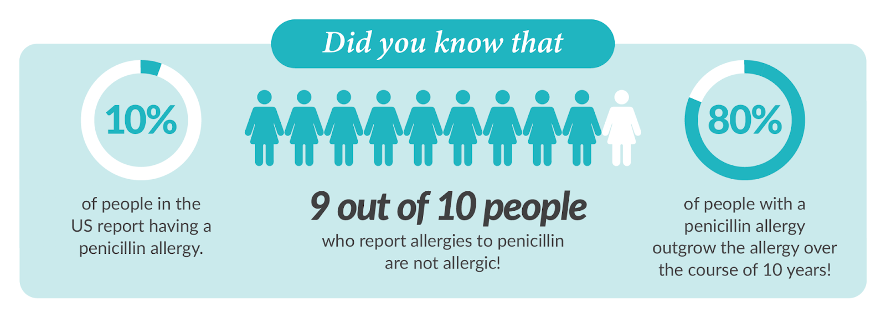

Pediatric empiric therapy
Assessment of Antibiotic Allergies
This supplemental section provides guidance on interpreting the "Alternative Therapy" recommendations in the Benioff Children's Hospitals Empiric Antimicrobial Therapy Guidelines for patients with antibiotic allergies, and caring for patients with documented antibiotic allergies:
- Many patients report a history of an antibiotic allergic reaction, most commonly to beta-lactam antibiotics (e.g. penicillins or cephalosporins).
- In some cases alternative recommendations are provided to help guide therapy when there is concern for a history of allergy that may limit first choice therapy. These alternative recommendations may stratify by characteristics of a patient’s reported previous reaction (“Higher risk” vs “lower risk for allergic reaction”), as well as the class of the labeled antibiotic allergy (penicillin and/or cephalosporin class antibiotics).
| When the guidelines refer to patients with... | |
| "Higher risk for allergic reaction" | "Lower risk for allergic reaction" |
| This includes patients who report history of reaction including: | This includes patients who report history of reaction limited to: |
|
|
*In addition to the above “higher risk” criteria, patients with the following allergy history suggestive of a Severe Type II-IV Reaction should generally not receive antibiotics of the same class without further evaluation by an allergy or infectious diseases specialist:
|
While the Empiric Antimicrobial Therapy Guidelines may provide alternative recommendations for antibiotic therapy, it is recommended to evaluate the antibiotic allergy, and take steps to remove the label if appropriate.
Resources to evaluate beta-lactam antibiotic allergies at UCSF
The above guidelines are based on the UCSF Inpatient Beta-Lactam Allergy Guideline, which is a comprehensive resource with further guidance for:
- Assessing allergy history for level of risk for subsequent reaction
- Choosing medications that can be given with or without a test dose procedure, based on prior allergy history.
- Guidance for test dose procedure; this is a safe procedure that can be performed on a hospital ward. At BCH, the IP PED Beta Lactam Allergy Test Dose Evaluation orderset should be used
Referrals and consultations
- Pediatric ID or Antimicrobial Stewardship teams are available for guidance on addressing a listed allergy vs. choosing alternative therapy
- For any patient with a listed antibiotic allergy, consider an outpatient referral to Pediatric Allergy Clinic for delabeling assessment
Why is assessment of antibiotic allergies important?

Most reactions documented as antibiotic allergies are not true allergies:
- Carrying an antibiotic allergy label is common: ~ 10 in 100 people have a labeled beta-lactam allergy (BLA)
- The true prevalence of IgE-mediated antibiotic allergy is much lower (estimated ~ 1 in 100 for BLA); most people with a documented BLA could safely receive beta-lactam antibiotics.
- Cross-reactivity rates between different beta-lactam antibiotics are low, and patients with true penicillin allergy can still safely receive many cephalosporins and carbapenems (and vice versa)
Carrying an antibiotic allergy label can be harmful:
- For many pediatric infectious conditions, a beta-lactam antibiotic is the first-line therapy. Patients with labeled antibiotic allergies often receive antibiotics that are less effective than first line therapy, and/or have higher toxicity risk and/or cost.
- An allergy label placed during childhood may affect care across the lifespan; pediatric clinicians have a special responsibility to apply allergy labels judiciously and remove them when appropriate.
What can you do to mitigate harm from antibiotic allergy labels?
Gather careful history on any labeled allergy
- Carefully assess the reported reaction to determine consistency with an allergic response.
- Ask about and review medication administration history in electronic medical record to see if the patient has tolerated the antibiotic(s) in question in the past.
Avoid labeling reactions as allergy if not consistent with a true allergic reaction:
- Avoid documenting an allergy when signs and/or symptoms are consistent with an anticipated medication side effect such as diarrhea only, nausea only, or a local injection site reaction
- Avoid documenting an antibiotic allergy in a patient based on a family history of antibiotic allergy in a relative.
- Avoid diagnosing Amoxicillin allergy in patients who develop a delayed maculopapular rash as the only manifestation.
- See "Rashes from amoxicillin: is it a true allergy?" and "Amoxicillin allergy & amoxicillin rash are often mislabeled" for more information on distinguishing these reactions.
- This is a common reaction ( ~5-10% of treated patients) that is not IgE-mediated and patients may safely continue or repeat therapy with Amoxicillin after experiencing this reaction.
Educate patients and families
- Families are more likely to have received education about the risks of a potential allergy than the risks of an inaccurate allergy label.
- Patient-centered information resources include:
- Penicillin Allergy: Facts for Patients. College of Allergy, Asthma & Immunology
- Am I Allergic to Penicillin? JAMA Patient Page
- Penicillin Allergy - What do you need to know? American Academy of Allergy, Asthma & Immunology
References
References:
Weiss, ME, et al. Drug allergy: an updated practice parameter. Ann Allergy Asthma Immunol 2010;105:273.e1-273.e78
Macy E, Contreras R. Health care use and serious infection prevalence associated with penicillin “allergy” in hospitalized patients: a cohort study. J Allergy Clin Immunol 2014;133(3):790–6.
Pichichero ME. A review of evidence supporting the American Academy of Pediatrics recommendation for prescribing cephalosporin antibiotics for penicillin-allergic patients. Pediatrics 2005;115:1048-1057.